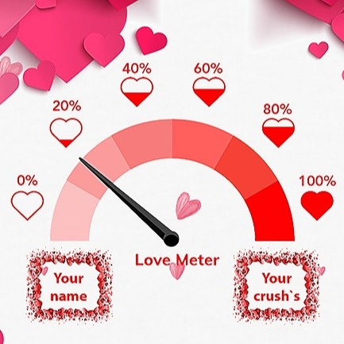

عندما نُسأل عن معنى الحب، وما التفسير الأدق له، وكيف نصف ذاك الشعور الذي يعترينا عندما يبدأ في النمو داخل أفئدتنا، ويهيم في أرواحنا.. يعترينا الجمود، ويغلبنا الصمت، ويتملك منا الجهل. فكيف نعبر عن شعور يعاش ولا يُحكى، وكيف نعرّف إحساسًا يضم آلاف المعاني، ومئات الكلمات؟
لكن ومع أنّ الحب شيء معنوي أكثر منه مادي، فلابد أن نتفق على أنّ له تعريفًا يختصر كل معانيه وحالاته.
الحُبّ هو شعور بالانجذاب والإعجاب نحو شخص أو شيء ما، وقد يُنظر للحبّ على أنّه كيمياء متبادلة بين اثنين، وفي داخل جسم الإنسان هرمون يسمى هرمون الأوكسيتوسين، والمعروف بهرمون المحبّين، ويفرزه الجسم عندما يتم اللقاء بينهم.
كما أنّ الحب هو مجموعة متنوعة من المشاعر الإيجابيَّة والحالات العاطفية والعقلية قوية التأثير.
والحب عطاء عميق، وتأثر عاطفي بشخص آخر، والشعور برباط دافئ، وهو مودة عميقة.
مع ان الحاسبة هذه تعتمد على حسابات رقمية وفلكية معروفة، تذكر انها مقيار استخدمه فقط للمعرفة والمرح ولا تعتمد عليه في تحديد علاقاتك. فان كنت تشعر بالحب فلن يمنعك او يحيدك شيء عنه ولا حتى اي مقياس.
هذ المقياس لا يقوم بتخزين اي معلومات او بيانات تدخلها عنك او عن اي طرف اخر.